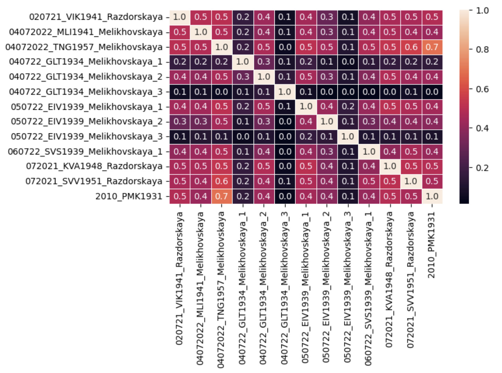

Лингвистический корпус текстов – это большой, электронный, структурированный массив языковых данных, который имеет лингвистическую разметку и предназначен для решения конкретных лингвистических задач (Захаров, Богданова 2020).
Существует два подхода к лингвистическому анализу на основе языковых корпусов (McEnery, Hardie 2012): анализ, основанный на корпусе (corpus-based), и анализ, направляемый данными (corpus-driven). В первом случае корпусные данные используются для проверки существующих теорий и гипотез. Во втором подходе на основе корпуса формулируются новые гипотезы и строятся лингвистические обобщения.
Способ сбора данных оказывается важным параметром при втором подходе. Выделяются мониторные, или мониторинговые, корпусы, которые сбалансированы, репрезентативны и постоянно дополняются новыми данными. Также есть неизменяемые со временем сбалансированные и репрезентативные корпусы. Корпус является оппортунистическим, если его нельзя отнести ни к одному из этих типов.
Оппортунистический корпус в (Нахимова 2013) также назван приспособленным. Особенностью такого корпуса является его несбалансированность и / или нерепрезентативность.
Материалом нашего исследования выступают двенадцать текстов, составляющих Корпус донских говоров. Это устный диалектный корпус русского языка, который был создан в рамках проекта «Зеркальные лаборатории» между НИУ ВШЭ и Южным федеральным университетом (Флягина и др. 2022–2023). Также мы анализировали тринадцатый текст, который пока не вошёл в основной состав Корпуса донских говоров.
Нам как исследователям важно понимать, какими характеристиками обладает этот корпус, поскольку он собран на материале нестандартной речи.
При этом мы сосредоточились на речи информантов. Речь интервьюеров на данном этапе не рассматривалась.
Мы анализировали тринадцать расшифровок файлов, записанных в трех населенных пунктах. Некоторые из этих файлов были получены от одного и того же информанта и представляли собой фрагменты одной большой беседы. Их можно увидеть по одинаковым кодам файлов, в конце которых есть цифры 1, 2 или 3, например, 040722_GLT1934_Melikhovskaya_1, 040722_GLT1934_Melikhovskaya_2 и 040722_GLT1934_Melikhovskaya_3.
Наша гипотеза заключается в том, что все тексты будут показывать высокую степень схожести, так как они представляют собой интервью, в которых информант отвечает на стандартные вопросы интервьюера про жизнь, свадебные обряды, строительство дома и т. д.
Для проверки гипотезы был проведен корреляционный анализ с использованием языка программирования Python (Бондарева, Стеценко 2018). Корреляционный анализ направлен на изучение связности и схожести текстов на основе используемой в них лексики.
Анализа показал, что большинство текстов средне или сильно похожи друг на друга – с коэффициентами корреляции от 0,3 до 0,7 (см. Рис. 1). Но также есть два текста с кодами 040722_GLT1934_Melikhovaskaya_1 и 040722_GLT1934_Melikhovaskaya_3 и один с кодом 050722_EIV1939_Melikhovaskaya_3, которые имеют слабую корреляцию как с другими файлами, так и друг с другом (коэффициенты 0,1 и 0,2). Эти файлы являются самыми короткими частями из больших интервью. Мы полагаем, что по этой причине ими можно пренебречь.
Таким образом, корреляционный анализ показал, что тексты в целом лексически схожие. Другими словами, корпус несбалансирован.
|  |
| Рисунок 1. Корреляционная матрица текстов Корпуса донских говоров |
Мы также провели стилометрический анализ, чтобы на основании измеряемых параметров проверить, насколько похожи стили речи информантов (Цифровые гуманитарные исследования 2023). Анализ показал, что файлы не собираются в единые кластеры, которые были бы похожи друг на друга, – даже фрагменты, полученные от одного информанта. Кажется, что это противоречит результатам корреляционного анализа, потому что стилометрическое исследование показало, что каждый текст уникален по своему стилю. Но также существует вероятность, что при проведении стилометрического анализа нами не были подобраны подходящие настройки.
Одна из задач при изучении текстов Корпуса донских говоров состояла в том, чтобы узнать, можно ли использовать морфологические парсеры, которые обычно применяются для автоматического анализа литературного русского языка.
Оказалось, что анализаторы, обученные на литературном русском языке, выдают ошибки при работе с нестандартной диалектной речью.
Приведем некоторые примеры из работы морфоанализатора Mystem (Segalovich 2003), где мы обнаружили неточности:
- существительное среднего рода дружко означает распорядителя на свадьбе со стороны жениха. Оно было неверно определено как наречие (по всей видимости, из-за морфологической схожести со словом легко);
- существительное мужского рода котух в донских говорах обозначает хлев для мелкого рогатого скота и свиней. При анализе предложения Он и в сараях, и в котухах оно оказалось одушевленным существительным женского рода предложного падежа во множественном числе;
- чебурок – это диалектное существительное мужского рода для обозначения растения чабрец. В предложении Чебурок вот этот оно было проанализировано как одушевленное существительное общего рода в родительном или винительном падеже множественного числа.
Таким образом, Корпус донских говоров является несбалансированным, потому что лексически все тексты похожи друг на друга. Это значит, что его можно назвать оппортунистическим. Также мы выявили, что при морфологическом анализе диалектизмов нужно обращать на них особое внимание, так как есть вероятность ошибок. Это является следствием нестандартной речи, которая легла в основу Корпуса донских говоров.
Литература
Бондарева Е. В., Стеценко Н. В. Метод корреляционных плеяд в практике педагогических исследований // Математическая физика и компьютерное моделирование. 2018. №2. С. 52–58.
Захаров В. П., Богданова С. Ю. Корпусная лингвистика: учебник. – СПб.: Изд-во С.-Петерб. ун-та, 2020.
Нахимова Е. А. Использование корпусной методологии при сопоставительном изучении прецедентных имен // Политическая лингвистика, 3 (45), 2013. С. 48–56.
Флягина М. В., Калиничева Н. В., Северина Е. М. Корпус донских диалектов. 2022–2023. Москва: Международная лаборатория языковой конвергенции, НИУ ВШЭ. URL: http://lingconlab.ru/don_rnd (дата обращения 29.04.2024).
Цифровые гуманитарные исследования: монография / А. Б. Антопольский, А. А. Бонч-Осмоловская, Л. И. Бородкин [и др.]. – Красноярск: Сиб. федер. ун-т, 2023.
McEnery T. & Hardie A. Corpus Linguistics. Method, Theory, and Practice. Cambridge: Cambridge University Press, 2012.
Segalovich I. A fast morphological algorithm with unknown word guessing induced by a dictionary for a web search engine. In Proceedings of the International Conference on Machine Learning; Models, Technologies and Applications. MLMTA'03, June 23–26, 2003, Las Vegas, Nevada, USA.
1Исследование проведено в рамках реализации проекта «Зеркальные лаборатории» НИУ ВШЭ, № 6.13.1-02/250821-1, тема «Конвергенция языковых пластов русского языка в зеркале цифровых решений».